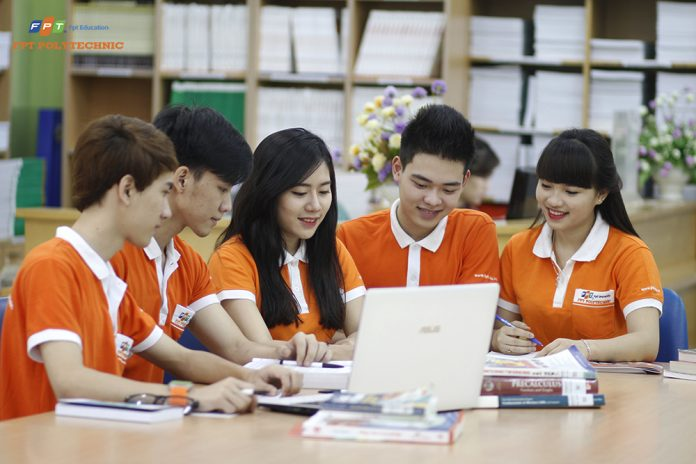

Tân sinh viên được đào tạo “Kỹ năng học tập” ngay từ những ngày đầu nhập học
“Kỹ năng học tập” là môn học trong Bộ môn Kỹ năng mềm dành cho các tân sinh viên Cao đẳng FPT Polytechnic. Qua môn học này, các bạn sẽ được hỗ trợ kiến thức kỹ năng học tập mới để có thể thích nghi được với môi trường đào tạo mới. Những nội dung chính trong chương trình Kỹ năng học tập mà tân sinh viên Cao đẳng FPT Polytechnic cần phải học bao gồm: Kỹ năng học tập trên lớp, kỹ năng tự học ở nhà, kỹ năng ghi nhớ tốt, kỹ năng chuẩn bị và làm bài kiểm tra, và đặc biệt hơn nữa là kỹ năng thuyết trình trước đám đông và hoạt động ngoại khóa.